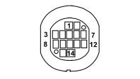

D035 LEFT REAR DOOR COUPLING (REAR)
- Path
- Electrical equipment > 3 CONNECTORS > D INTERMEDIATE COUPLINGS > D035 LEFT REAR DOOR COUPLING > D035 LEFT REAR DOOR COUPLING (REAR)
- Kind
- connector pinout (pin -> wire colour -> other end)
- Applies to
- all engines; all production periods; only with equipment: Subwoofer
- Interactive page
- https://sloeber94.github.io/elrnDB-fPnd/en/#/169003107
Applies to: all engines; all production periods; only with equipment: Subwoofer

Wiring | Colour |
|---|---|
NERO (black) |
Pin | Cable | Destination | |||
|---|---|---|---|---|---|
Sec.. | Colour | Node | Connect. | Pin | |
1 | 1,5 | G (yellow) | 10 | ||
2 | 0,35 | MV (brown with green stripe) | 15 | ||
4 | 0,35 | NS (black with pink stripe) | 16 | ||
6 | 1,5 | BV (white with green stripe) | X | 5 | |
4 | |||||
9 | 1,5 | CN (orange with black stripe) | X | 4 | |
1 | |||||
14 | 1,5 | H (grey) | 9 | ||